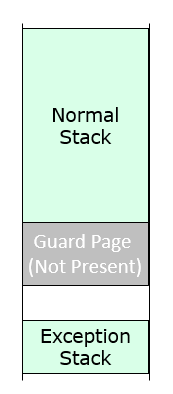

Stack Overflow Detection
The UEFI specification defined 128 KiB stack size as the minimal requirement. There is no explicit requirement for System Management Mode (SMM). A Platform Configuration Database (PCD) gUefiCpuPkgTokenSpaceGuid.PcdCpuSmmStackSize(https://github.com/tianocore/edk2/blob/master/UefiCpuPkg/UefiCpuPkg.dec) defines the SMM stack size for each processor. The default size is 8KiB, and we observed some platforms set it to be 128KiB.
Since the stack size is not so large, there is risk that stack overflows and overlaps with the data in heap below stack. We need to devise an effective mechanism to detect if the stack is healthy in order to assist the developer in debugging potential issues. To that end we use the stack guard page. See figure 4-1.

Figure 4-1 StackGuard for Overflow Detection
The core marks the last page in the bottom of stack as a “GuardPage”, which works as a guard. The GuardPage is set be NOT PRESENT in the page table. When the stack overlaps with the GuardPage, an exception will be triggered.
An interesting thing is that if the current stack is NOT PRESENT, the CPU cannot push the error code and architecture status (CS/RIP/RFLAGS/SS/RSP) to the current stack. The core must setup a special exception stack for the exception handler, which is the “ExceptionStack”. This page is reserved separately and only used by the exception handler. It guarantees the stack is always valid when an exception happens. For a multi-processor system, each processor has its own stack, its own guard page and its own exception stack.
In IA32 protected mode, the core sets up an exception task state segment (TSS) and puts the exception TSS segment in the page fault exception entry. This is done so that when the exception happens, the CPU does a task switch to the new stack. In X64 long mode, the core just reuses the TSS and sets up the IST bit in the page fault exception entry to indicate a stack switch.
In SMM, this stack guard feature is already done in https://github.com/tianocore/edk2/tree/master/UefiCpuPkg/PiSmmCpuDxeSmm and controlled by PCD gUefiCpuPkgTokenSpaceGuid.PcdCpuSmmStackGuard in https://github.com/tianocore/edk2/blob/master/UefiCpuPkg/UefiCpuPkg.dec
In UEFI, this stack guard feature is done in https://github.com/tianocore/edk2/tree/master/MdeModulePkg/Core/DxeIplPeim and controlled by PCD gEfiMdeModulePkgTokenSpaceGuid.PcdCpuStackGuard in https://github.com/tianocore/edk2/blob/master/MdeModulePkg/MdeModulePkg.dec. If the PcdCpuStackGuard is TRUE, the DxeIpl clears the PRESENT bit in the page table for the guard page of the BSP stack. The guard page of the AP stack is initialized in CpuDxe driver, https://github.com/tianocore/edk2/blob/master/UefiCpuPkg/Library/MpInitLib/DxeMpLib.c by using DXE service SetMemorySpaceAttributes().
Besides CPU driver, the CpuExceptionHandlerLib (https://github.com/tianocore/edk2/tree/master/UefiCpuPkg/Library/CpuExceptionHandlerLib) is also updated to support Stack Overflow detection. The new API – InitializeCpuExceptionHandlersEx() is introduced to initialize the exception TSS. InitializeCpuExceptionHandlersEx()is invoked by DxeCore to setup the exception TSS for the Boot Strap Processor (BSP), and InitializeCpuExceptionHandlersEx()is invoked by CpuDxe driver to setup the exception TSS for the Application Processor (AP).